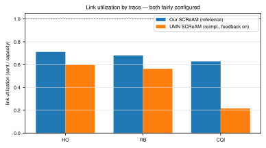

supportedProject-internal cross-implementation comparison vs UMN Teleop-Gopher-streamer (scream-integration branch 502533c)
Claim
When the link's bandwidth keeps changing, our SCReAM raises and lowers its sending rate to match. UMN's reimplementation holds a nearly constant rate. The cause is a wiring problem inside UMN — the controller computes a target sending rate but that target is never applied to the video encoder — not a flaw in the SCReAM algorithm and not how often the loop runs.
With both implementations configured fairly, our SCReAM changes its sending rate to match the available bandwidth, while UMN's holds a near-constant rate. The cause is a controller-to-encoder gap: UMN's controller decides on a rate, but the encode loop tries to apply it by writing codec.bit_rate on an already-running software encoder — which libav ignores, since a software encoder's bitrate is fixed when it opens. So the rate is set once at startup and never updated. This is a wiring problem in the implementation, not a flaw in the SCReAM algorithm or a matter of how often the control loop runs.
Supporting evidence
Link utilization (share of available bandwidth used) on the high-capacity CQI trace: ours ~63%, UMN ~22%.
UMN's sending rate stays near 776-780 kbps on all three traces, whose capacities differ about 2.5x — it does not rise when more bandwidth is available.
Speeding up UMN's control loop (200 ms to 50 ms) and ramping faster did not raise its utilization — loop timing is not the cause.
Measured directly: the actual sent rate exceeded the controller's commanded rate by more than 1.3x in about 89% of decisions (the controller-to-encoder gap); UMN's packet-loss congestion signal also never fired.
Pinpointed in code: the encode loop (encoder.py _encode_stream_pyav) sets codec.bit_rate on a live encoder; only a full encoder reopen actually changes the rate, and libvpx never triggers that reopen. UMN's separate controller-thread design hand-wires this connection per codec; our SCReAM is a built-in pipeline element whose rate is applied by the framework.
Findings and Limitations
Findings
On the high-capacity (CQI) recording, our SCReAM uses about 63% of the link; UMN uses about 22%.
UMN's SCReAM sends a nearly constant ~776–782 kbps across all three recordings, even though the recordings differ in capacity by about 2.5x. UMN is not tracking the link.
The cause is a wiring problem between the controller and the encoder, not the SCReAM algorithm and not how often the loop runs.
In code — UMN's encoder.py writes the controller's target rate onto an encoder that is already running. The libav library quietly ignores that write because a software encoder's bitrate is fixed when it opens. The libvpx path never reopens, so UMN's rate is effectively set once at startup.
Different shapes — UMN runs the controller in a separate thread that leaves a per-frame "budget" the encode loop has to apply by hand, per codec. Ours is a built-in pipeline element whose rate the framework applies to the encoder automatically.
Algorithm fidelity from reading the source (not measured here — the wiring problem hid it) — the reference SCReAM keeps track of how long the queue has been growing, how many bytes are in flight, and adapts its step size. UMN's just multiplies up by 1.05 or down by 0.8 on simple yes/no signals, with no memory.
An earlier version of this comparison showed UMN overshooting the link — that was a configuration mistake on our side (network_time_sync was off). With it on, UMN no longer overshoots.
UMN's delay-based congestion signal works once network_time_sync is on. Its loss-based signal never fired in these runs.
Limitations
Single-host loopback reproduces the bandwidth and the delay faithfully but not real 5G radio effects like interference or radio-layer retransmits.
We measured how much of the link each side uses, not how good the picture looks. "Uses the link better" is a bandwidth claim, not yet a video-quality claim.
UMN's controller is an early reimplementation (its own code marks receiver feedback as future work). This is a snapshot of branch 502533c, not a general statement about SCReAM.
We did not measure UMN's deployed hardware (NVENC) encoder. From reading the code we believe the same wiring problem affects it, but a real NVIDIA box would be the honest confirmation.
Measuring picture quality (PSNR or SSIM of the received video vs the source on both sides) is the next verification step.
Figures
Figure H5-1. Isolating the cause. Each bar adds one capability to UMN's SCReAM: S0 (none) → S1 (+delay signal) → S2 (+faster 50 ms loop) → S3 (+faster ramp); REF is our reference SCReAM. Left: overshoot (the share of time spent sending faster than the link can carry — lower is better) drops once the delay signal is on at S1, and the faster-timing steps S2/S3 do not change it. Right: utilization (the share of available bandwidth used — higher is better) on the high-capacity CQI trace stays low through S1/S2/S3, so faster timing does not help; only the reference implementation reaches high utilization.

Figure H5-2. Share of available bandwidth used (utilization), per trace, with both implementations configured fairly. Ours rises with the available bandwidth (most visibly on the high-capacity CQI trace); UMN's stays low because its sending rate is held near a constant regardless of the link. The dashed line marks 1.0 — using all the available bandwidth.
Tables
h5_fair_comparison
trace
capacity_kbps
ours_utilization
umn_utilization
ours_sent_kbps
umn_sent_kbps
ours_overshoot
umn_overshoot
HO
2,387
0.711
0.598
1,020
776
0.237
0.165
RB
1,825
0.680
0.563
1,040
776
0.108
0.116
CQI
4,710
0.629
0.216
2,339
780
0.074
0.000
h5_isolation_ladder
rung
ho_overshoot
cqi_utilization
cqi_sent_kbps
S0 no delay
0.712
0.553
2,109
S1 +delay
0.165
0.216
780
S2 +50ms
0.164
0.216
780
S3 +ramp
0.166
0.216
782
REF ours
0.237
0.629
2,339
h5_implementation_maturity
dimension
umn_reimplementation
ours_reference
Algorithm
Hand-written Python, SCReAM-inspired; its own code calls it a first pass for hardware integration
Ericsson reference SCReAM (C++), via the gstscream plugin
Does the rate decision reach the encoder?
No on the software path — assigns codec.bit_rate on a running libvpx encoder, which libav ignores
Yes — applied live through GStreamer's encoder property; the framework reconfigures the encoder
Congestion signals used
Delay only (and only with network_time_sync on); loss signal never fires; receiver feedback marked a future phase
Delay and loss together, via standard RTCP feedback
Packet pacing
None — packets leave as the encoder emits them
SCReAM paces its own RTP send queue
Integration
Separate controller thread leaving a per-frame budget the encode loop must apply correctly per codec
Built-in pipeline element; the media framework guarantees the rate reaches the encoder
h5_algorithm_comparison_code_review
aspect
umn_reimplementation
ours_reference
Control variable
One scalar target rate
A congestion window + bytes-in-flight limit, then a rate derived from it
Delay handling
Binary: is one-way delay over the 120 ms threshold?
A queue-delay trend/gradient vs a target, scaled continuously
Rate increase
Blind x1.05 every 200 ms tick, regardless of history
Adaptive: fast when far below the last good point, gentle near it
Rate decrease
Fixed x0.8 (x0.7 on loss)
Proportional to how far queue delay exceeds the target
![Figure H5-1. Isolating the cause. Each bar adds one capability to UMN's SCReAM: S0 (none) → S1 (+delay signal) → S2 (+faster 50 ms loop) → S3 (+faster ramp); REF is our reference SCReAM. Left: overshoot (the share of time spent sending faster than the link can carry — lower is better) drops once the delay signal is on at S1, and the faster-timing steps S2/S3 do not change it. Right: utilization (the share of available bandwidth used — higher is better) on the high-capacity CQI trace stays low through S1/S2/S3, so faster timing does not help; only the reference implementation reaches high utilization.](results/h5_isolation_ladder.svg)